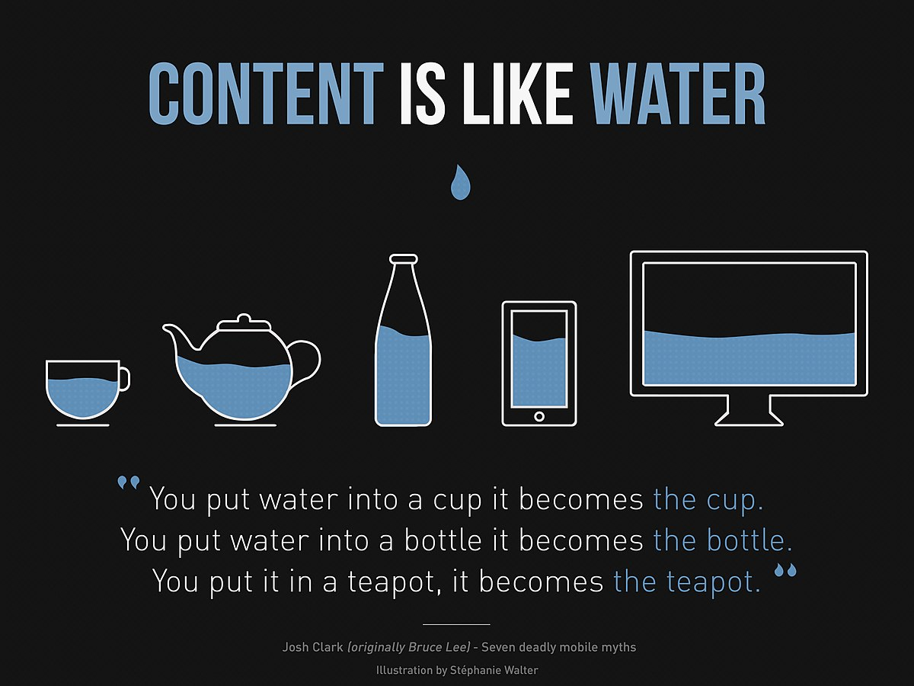

Die 10 besten Ausreden

Bin zu spaet. Die Strasse war heute laenger.
Sorry, die Strassenbahn hat sich verfahren.
Tut mir leid, der Weckdienst hatte verschlafen.
Entschuldigung, aber meine Katze ist auf meinem Hausschluessel eingeschlafen.
Wollte echt, echt wirklich, puenktlich sein, doch dann bin ich an meinem Honigbrot kleben geblieben.
Bitte verzeih, der Bettzipfel hat mich festgehalten!.
Entschuldige, mein Wecker hatte eine allgemeine Schutzverleztung.
Ich dachte Zeit waere Geld, und so habe ich auf ordentlich Zinsen gehofft..
Da war ein Unfall unterwegs und ich hab angehalten um zu helfen.
Wenn du hier kommst, Faengt wieder nach vor an. Wir sind nicht fertig mit der Demo